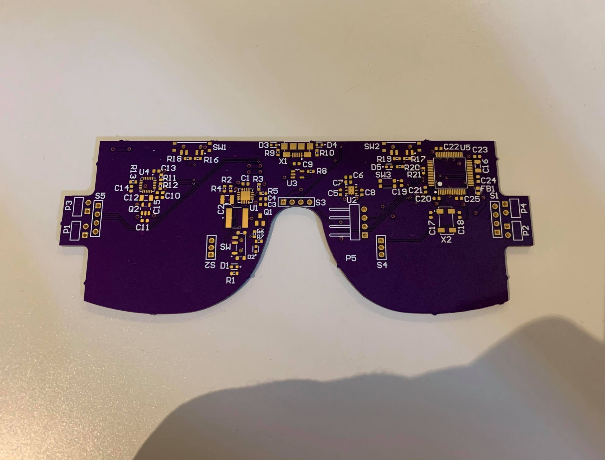
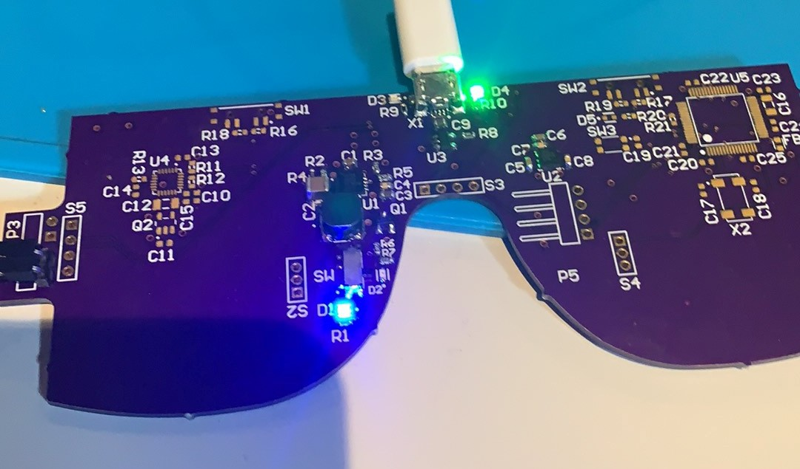
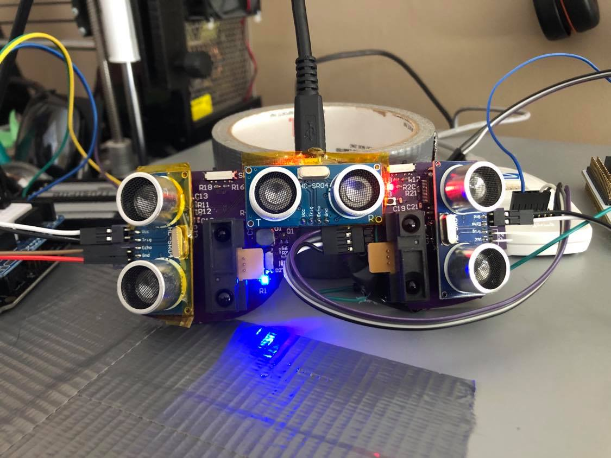

Bare PCBs
The manufactured Pcbs had some manufacturing and shipment delays due to the freak snowstorms in the southern United States. As a result, the soldering portion of the project was delayed by appoximately a week. Below is an image of the bare PCB prior to soldering.
Soldering
The soldering portion of the manufacturing was done by hand in small testable increments. Initially the power control circuitry was soldered on to ensure proper functionality. This circuitry consisted of the Battery leads, the 5V boost convertor, the 3.3V linear regulator, the charging circuitry and the LEDs used for testing (powered on, low power, charging, and fully-charged).
Below shows an image of the power circuitry, in this image, the charging cable is plugged in to the board with fully charged batteries, hence the green "fully-charged" led (D4) on the top and the blue LED (D1) signifying power. The other two leds are red (D2) signifying low power, and orange (D3) signifying charging.
To test proper functionality of the power control circuitry, a digital multimeter was used to measure the 5V and 3.3V rails to ensure that the voltage levels were as expected.
Next, the microcontroller, and relevant control circuitry were soldered. At this point the ST-Link debugger/programmer was set up and flashing was tested first on the nucleo board to ensure that the flashing method was robust.
In order to test the board was functioning and that flashing code was working as expected the "Blinky" code was flashed on to the board, this program cause the led D5 to flash on and off.
Once it was known that the MCU was working the IMU and two control switches were soldered on. The software team created a simple set of programs to determine if each sensor was working by adjusting the blinking rate of the led depending on the input the MCU recieves from the specific sensor. These programs were used to ensure that each individual sensor was working prior to the finalization of the full program functionality.
Finally, the sensors were soldered on and tested in a similar fashion to the IMU and the control switches. Below is an image of the final circuitry prior to mechanical assembly
 At this point the main electronics for the system are complete and are awaiting software finalization and mechanical assembly.